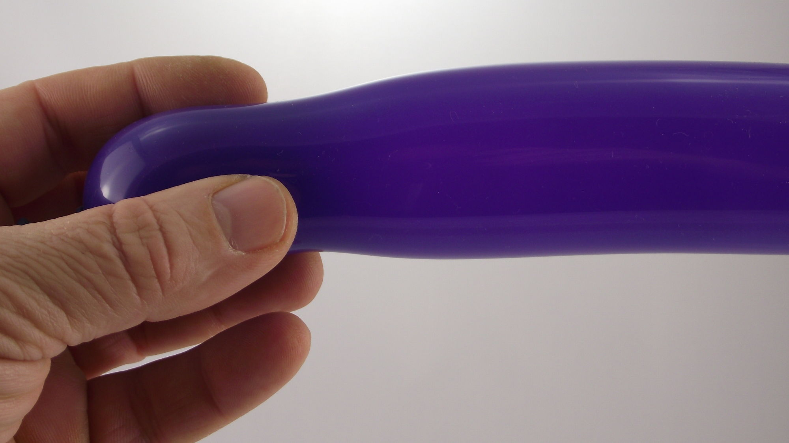
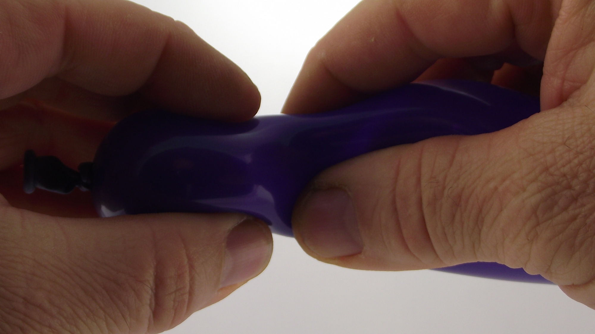
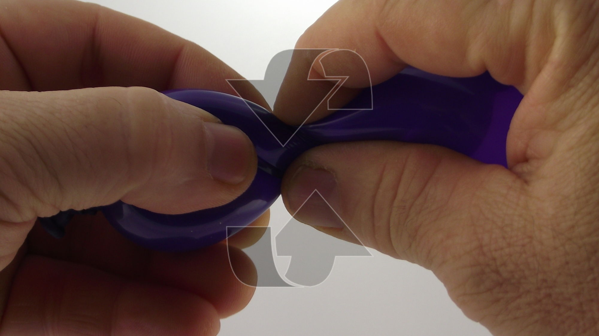
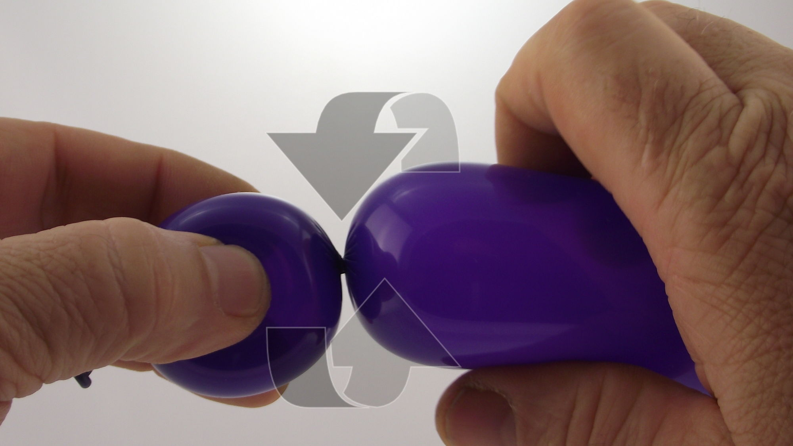
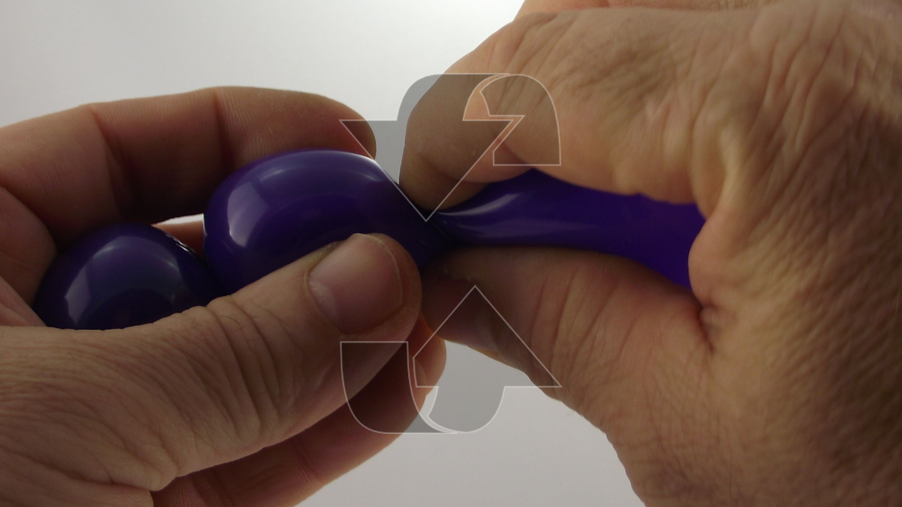
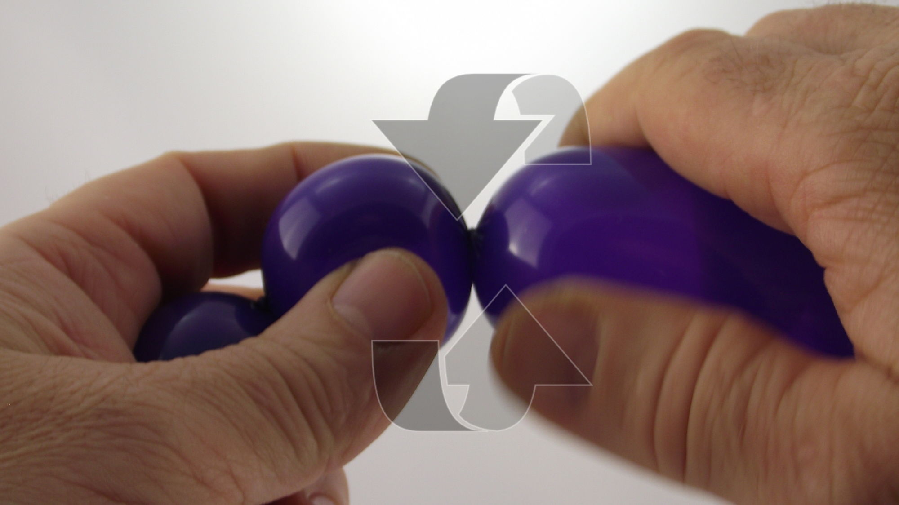
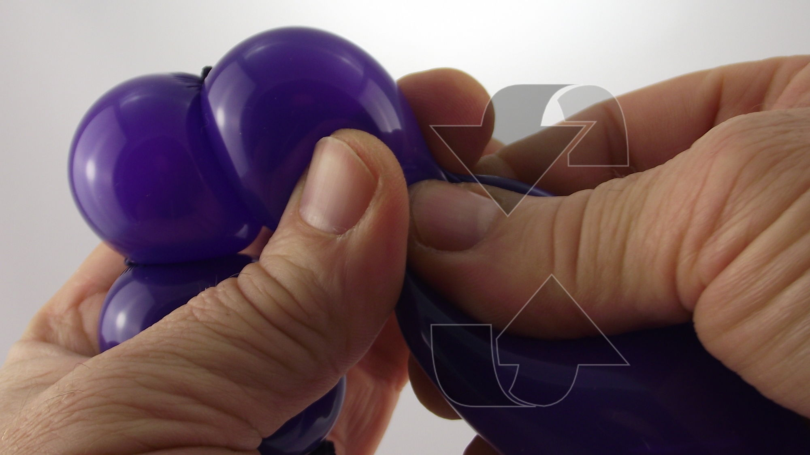
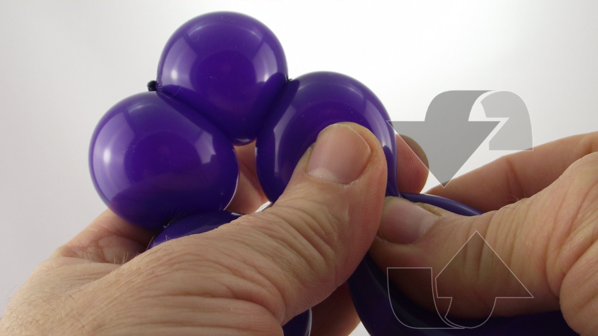
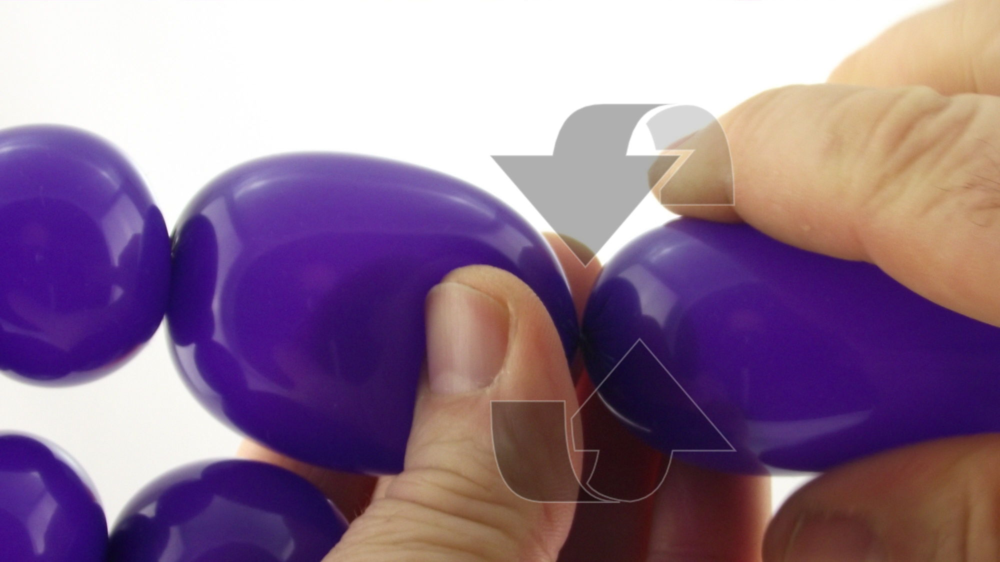
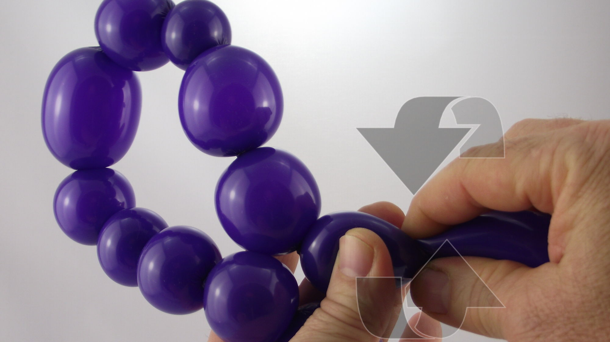

La confection de bulles est la technique de base de la sculpture sur ballon. Une bulle peut être parfaitement ronde ou bien être allongée pour former une espèce de 'saucisse'.
Dès le départ, il vous faudra choisir :
Votre main de maintien, c'est celle qui tiendra toujours le ballon.
Votre main de manipulation, c'est celle qui donnera toujours des formes au ballon.
Votre sens de rotation du ballon, c'est le sens dans lequel vous tournerez toujours le segment de ballon restant sur lui-même.
Faites plusieurs essais préliminaires pour voir ce qui vous convient le mieux, mais une fois décidé, n'en changez plus ! La précision de vos futurs automatismes en dépendent.
Et ce n'est pas tout ! Tant que vous tenez la première bulle d'une série avec votre main de maintien, que vous tenez le segment de ballon restant avec votre main de manipulation, et que vous avez bien fait tourner toutes les bulles de la série toujours dans le même sens de rotation… eh bien, les bulles du milieu ne se déferont jamais, même sans les tenir ! Vous verrez, c'est magique !
1- Prendre un ballon dans une main (la main de maintien) et positionner les doigts à l'endroit où la bulle doit être formée.2- Positionner l'autre main (la main de manipulation) juste en face de la première, et appuyer sur le ballon à l'aide du pouce et de l'index... 3- tout en faisant tourner le ballon sur lui-même, de manière à former un pli.4- Une fois le pli formé, continuer à faire tourner le segment de ballon restant au moins trois fois sur lui-même afin de bien sécuriser la première bulle. 5- Sans lâcher le ballon, déplacer les doigts à l'endroit où la deuxième bulle doit être formée et refaire la même manipulation. Gardez toujours le même sens de rotation !6- Ne pas oublier de bien faire tourner le segment de ballon restant au moins 3 fois sur lui-même afin de bien sécuriser la deuxième bulle.7- Continuer de même avec la troisième bulle. Inutile de se soucier de la bulle du milieu, elle tiendra toute seule tant que vous garderez le même sens de rotation.8- Continuer de même avec la quatrième bulle. Encore une fois, inutile de se soucier des bulles du milieu, elles se tiendront toutes seules tant que vous garderez le même sens de rotation.9- Etc, etc !10- Vous pouvez varier la taille des bulles selon votre besoin et en faire autant que vous le désirez.11- C'est aussi simple que ça !
À bientôt ! Pour une autre leçon… avec Môssieur Ballon !